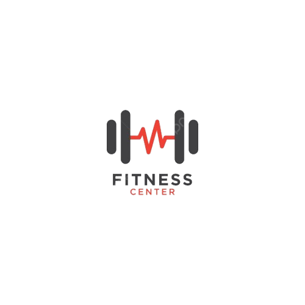
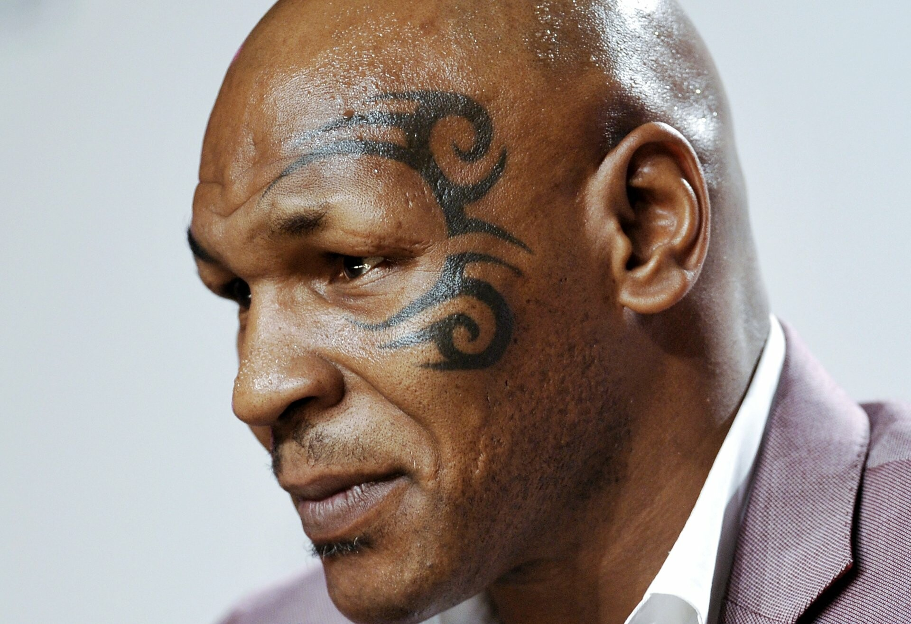

Né à Madère en 1985, Cristiano Ronaldo grandit dans des conditions modestes avant de percer au Sporting CP. Il se révèle à Manchester United, remportant sa première Ligue des Champions et son premier Ballon d'Or. Transféré au Real Madrid en 2009, il y devient le meilleur buteur de l'histoire du club avec quatre nouveaux Ballons d'Or. Il brille ensuite à la Juventus et revient brièvement à Manchester United avant de rejoindre Al-Nassr. Capitaine emblématique de la sélection portugaise, il remporte l'Euro 2016 et la Ligue des Nations. Il détient de nombreux records mondiaux, dont celui du meilleur buteur de l'histoire en sélection et en matches officiels. Infatigable travailleur, il est considéré comme l'un des plus grands footballeurs de tous les temps. Aujourd'hui, il continue d'écrire sa légende à travers le monde et avec le Portugal.

Né à New York dans l'arrondissement de Brooklyn, Michael Gerard Tyson (dit Mike Tyson) est un boxeur américain qui a marqué l'histoire de la boxe anglaise. Surnommé « Iron Mike » ou « Kid Dynamite », il est devenu le 22 novembre 1986 le plus jeune champion du monde des poids lourds de l'histoire à seulement 20 ans, grâce à sa puissance phénoménale, sa vitesse et son style unique. Son parcours extraordinaire, façonné par son entraîneur Cus D'Amato, en a fait une véritable légende vivante du sport.